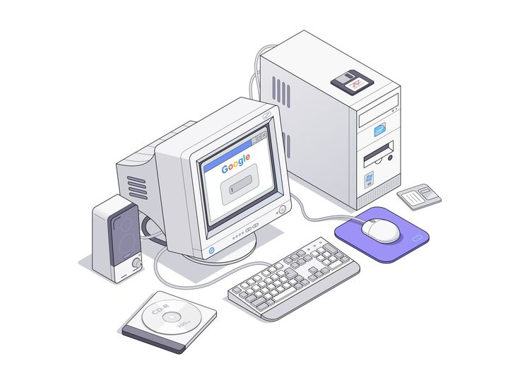
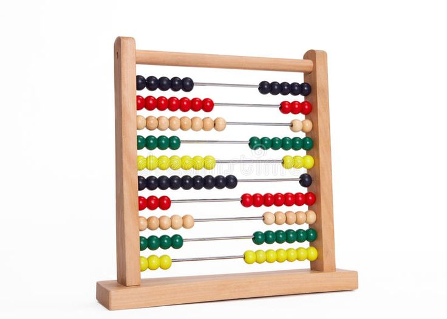
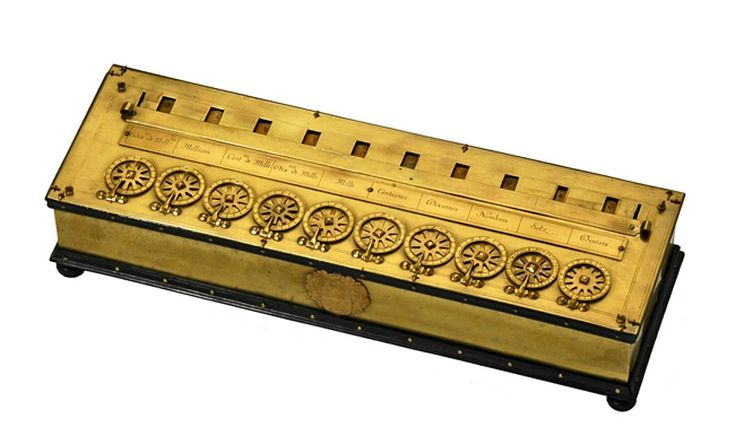
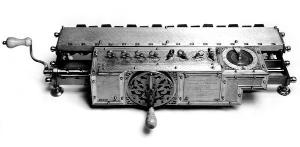

La computadora

|
Computadora, es una máquina electrónica digital programable que ejecuta una serie de comandos para procesar los datos de entrada, obteniendo convenientemente información que posteriormente se envía a las unidades de salida. Una computadora está compuesta por numerosos y diversos circuitos integrados y varios elementos de apoyo, extensión y accesorios, que en conjunto pueden ejecutar tareas diversas con suma rapidez y bajo el control de un programa(software). La constituyen dos partes esenciales, el hardware, que es su estructura física (circuitos electrónicos, cables, gabinete, teclado, ratón, etc.), y el software, que es su parte intangible (programas, datos, información, documentación, etc). |
 |
Historia
| A través del tiempo | Eventos más trascendentales |
|---|---|
| Ábaco (5,000 años atrás)  |
Primera Generación (1945-1956)
|
| Calculadora de Pascal (1642)  |
Segunda Generación (1957-1963)
|
| Máquina de multipllicar de leibniz  |
Tercera Generación (1964-1971)
|
Clases y Categorías
| Clases y Categorías de Computadoras | |
|---|---|
| Clases | Análoga |
| Digital | |
| De uso personal | |
| De uso especial | |
| Categorías | Supercomputadora |
| Mainframe | |
| Minicomputadoras | |
| Servidor | |
| Microcomputadoras | |
Componentes
- Caja(Case)
- Placa base
- Microprocesador
- Bios
- Memoria
- Teclado
- Disco duro
- Monitor